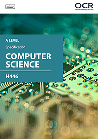

A Level Computer Science qualification helps students understand the core academic principles of computer science. Classroom learning is transferred into creating real-world systems through the creation of an independent programming project. Our A Level will develop the student’s technical understanding and their ability to analyse and solve problems using computational thinking.
Students are introduced to the internal workings of the (CPU), data exchange, software development, data types and legal and ethical issues. The resulting knowledge and understanding will underpin their work in component 03.
It covers:
- The characteristics of contemporary processors, input, output and storage devices
- Types of software and the different methodologies used to develop software
- Data exchange between different systems
- Data types, data structures and algorithms
- legal, moral, cultural and ethical issues
40%
This builds on component 01 to include computational thinking and problem-solving.
It covers:
- What is meant by computational thinking (thinking abstractly, thinking ahead, thinking procedurally etc.)
- Problem solving and programming – how computers and programs can be used to solve problems
- Algorithms and how they can be used to describe and solve problems.
40%
Students are expected to apply the principles of computational thinking to a practical coding programming project. They will analyse, design, develop, test, evaluate and document a program written in a suitable programming language.
The project is designed to be independently chosen by the student and provides them with the flexibility to investigate projects within the diverse field of computer science.
We support a wide and diverse range of languages.
20%